6.4.2.5. Usuarios y grupos¶
Aunque el servidor ya funciona como controlador de dominio para directorio activo, es bastante inútil en la medida en que no hay ni usuarios ni grupos definidos. Para esta tarea es importante tener en cuenta varios aspectos:
Identificadores numéricos uid y gid:
Los sistemas windows identifican usuarios y grupos a través de un identificador llamado SID con este aspecto:
S-1-5-21-967385316-1535922226-3155704407-1106por lo que un servidor samba que emule un controlador de dominio no tiene necesidad ninguna de manejar uid ni gid. Sin embargo, para tener disponbles usuarios y grupos en clientes linux es necesario que estos dispongan de la información que recogen respectivamente los ficheros
/etc/passwdy/etc/group. Para lograr esto, hay dos alternativas:Que el propio directorio activo sea capaz de contener los campos unix, cosa que se logra al incluir la opción
--use-rfc2307al crear el controlador de dominio.Que el demonio encargado de facilitar a NSS los campos cree la información (o parte de la información) al vuelo. En el caso particular de los identificadores numéricos lo que hará será traducir el SID a UID o GID según se trate de un identificador de usuario o grupo.
La información sobre el usuario se almacena en los sistemas unix en su directorio personal (home directory), que tradicionalmente se encuentra dentro de
/home, mientra que en los sistemas windows lo hace en los perfiles de usuario (user profile), que a partir de Windows Vista se hallan dentro deC:Users. Así pues, cada usuario maneja dos directorios (o perfiles) personales distintos: uno para el uso de clientes windows y otro para el uso de clientes linux: no tiene sentido que sean el mismo directorio, puesto que los sistemas son distintos.Los perfiles personales pueden ser locales o remotos. Si son locales se almacenan en cada cliente; y si son remotos lo harán en el servidor. Lo primero es sumamente sencillo de implementar, basta que se cree el directorio personal la primera vez que el usuario entra en ese cliente, cosa que hace windows automáticamente y cosa que puede hacer también linux si se usa el módulo pam_mkhomedir durante la autenticación. Sin embargo, no permitirá que el usuario disponga de esas configuraciones y ficheros, si cambia de máquina cliente.
Sabido todo lo anterior, nuestros objetivos son los siguientes:
Crear en el controlador usuarios que puedan autenticarse tanto en windows como en linux.
Que los usuarios guarden sus datos en el servidor, para que los tengan disponibles en cualquier cliente (perfiles móviles).
Dado que los perfiles de windows y de linux son distintos, que al entrar en un cliente windows, le aparezca al usuario en el volumen H: su directorio personal de linux, así podrá intercambiar ficheros entre un sistema y otro.
6.4.2.5.1. Preparativos¶
Antes de crear cualquier usuario, definiremos dos directorios compartidos:
/srv/samba/home, que servirá para almacenar los directorios personales de linux./srv/samba/profiles, que servirá para almacenar los perfiles personales de windows.
Utilizaremos para ellos el método que usa las Windows ACLs. Primeramente hay
que añadir lo siguiente a /etc/samba/smb.conf:
[home]
comment = Directorios personales para linux
path = /srv/samba/home
read only = No
[Profiles]
comment = Perfiles de usuario para windows
path = /srv/samba/profiles
read only = No
y crear ambos directorios con los permisos adecuados:
# mkdir -p /srv/samba/{home,profiles}
# chgrp domain_admins /srv/samba/{home,profiles}
# chmod g=rwx /srv/samba/{home,profiles}
Por último, recargamos la configuración:
# invoke-rc.d samba-ad-dc reload
Hecho esto, debemos rematar los permisos con la ayuda de un cliente windows y el usuario Administrator, que tiene el privilegio SeDiskOperatorPrivilege, según la configuración que ya realizamos en anterior epígrafe.
- home
Para el caso de los home, en la pestaña de Permisos de los recursos compartidos debemos dejar estos usuarios/grupos y permisos:
Entidad
Permisos
Usuarios autentificados1
Control total
Domain Admins
Control total
System
Control total
Esto es:
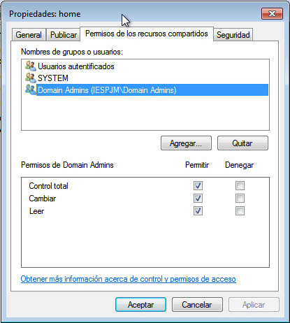En la pestaña de Seguridad hay primero que pulsar sobre el botón de Opciones avanzadas, y en la ventana que aparezca pulsar sobre Cambiar permisos y desmarcar la opción Incluir todos los permisos heredables del objeto primario de este objeto:
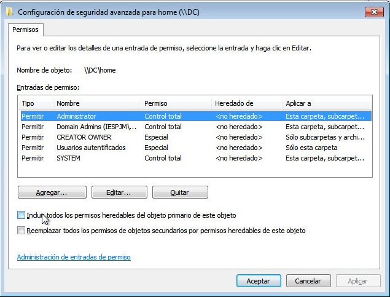Acéptese el cambio, hasta volver a la pestaña de Seguridad y déjense los siguientes permisos:
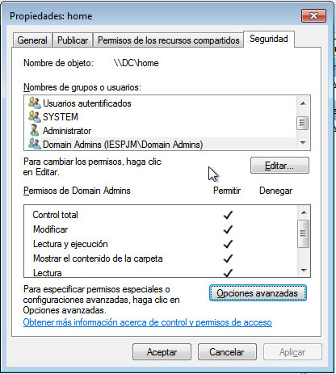Entidad
Permisos
Administrator
Control total
Usuarios autentificados
Leer y ejecutar, Ver contenidos de carpeta, Leer
Create Owner
Control total
Domain Admins
Control total
System
Control total
Además, váyase de nuevo a Opciones avanzadas, elíjase Cambiar permisos, selecciónese Usuarios Autentificados, púlsese Editar y en la lista desplegable Aplicar a elíjase Sólo en esta carpeta:
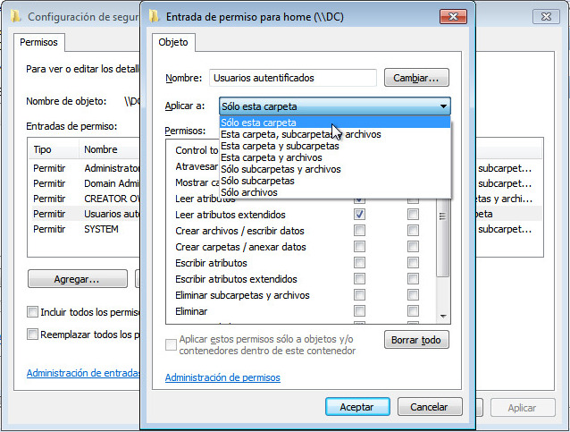Por último, debe aceptarse todo para que tengan efecto los cambios.
- Profiles
La configuración de este recurso compartido es diferente. En la pestaña Permisos de los recursos compartidos debemos dejar a Domains Users:
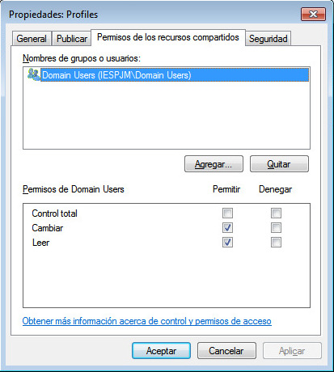Y en la pestaña Seguridad debe pulsarse sobre Opciones avanzadas y cambiar los permisos para que queden del siguiente modo:
Entidad
Permisos
Aplicar a
Administrator
Control total
Esta carpeta, subcarpetas y ficheros
Domain Users
Los expresados en la captura
Sólo a esta carpeta
Creator Owner
Control total
Sólo a subcarpetas y ficheros
Es decir:
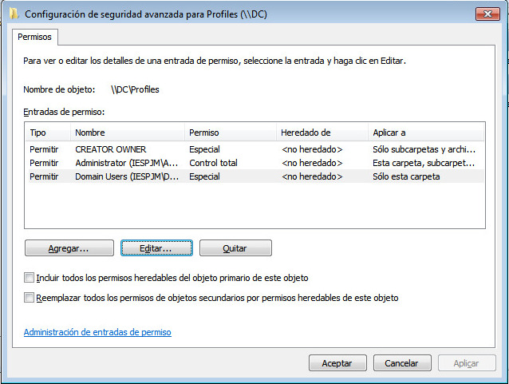Los permisos de Domain Users deben ser estos en particular:
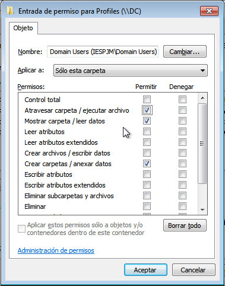
Una vez completado todo, ya tenemos preparados los dos recursos de disco que usarán los usuarios. Ahora sólo toca crearlos…
Nota
Los perfiles móviles en linux aún no funcionan. Revise el epígrafe sobre perfiles móviles.
6.4.2.5.2. Gestión¶
Para gestionar usuarios tenemos dos opciones: usar linux (el propio servidor o un cliente) o usar la herramienta RSAT para administración remota del servidor en un cliente windows2.
6.4.2.5.2.1. Linux¶
La herramienta fundamental para la gestión de usuarios y grupos es samba-tool3, aunque podemos usar otras para consulta y edición. Como esta labor requiere permisos de administración usaremos la cuenta Administrator. Lo más cómodo es utilizar kerberos para no tener que constantemente que identificarnos:
$ kinit Administrator@IESPJM.DOMUS
Password for Administrator@IESPJM.DOMUS:
Warning: Your password will expire in 39 days on vie 10 feb 2017 18:22:47 CET
La gestión de usuarios se lleva a cabo con samba-tool user más un subcomando (create, delete, etc.) que indica cuál es la acción a realizar. Empecemos por crear usuarios, pero antes tengamos presentes varias presupuestos:
Se dejará que el cliente elija dónde montará el directorio personal del usuario, ya que se incluyó en la configuración de sssd la directiva fallback_homedir, que establece tal directorio si el directorio activo no lo proporciona4.
Tampoco se fijará en el directorio activo la shell de usuario, ya que se incluyó la directiva default_shell en los clientes.
No se fijará UID para el usuario, ya que la configuración propuesta de sssd se encarga de hacer un mapeo al vuelo entre identificadores unix y SID. Esta configuración no sólo hace el mapeo, sino que obvia cualquier UID o GID que se haya fijado en el directorio activo. Como consecuencia, tampoco se expresará el GID del grupo principal, lo que supone que el grupo principal siempre será «Domain Users». Por supuesto, tendremos total libertad para hacer miembro a un usuario particual de cualquier grupo.
Por la configuración de sssd (directiva override_space), los nombres de los grupos de windows serán domain_users, domain_admins, etc., donde el caracter de subrayado sustituye al espacio. Los veremos escritos en minúsculas, aunque podremos utilizar mayúsuculas si queremos, porque el directorio activo no es sensible al uso de unas y otras.
Los directorios personales para linux de los usuarios se almacenarán en el directorio
/srv/samba/home/<usuario>del servidor y se hará accesibles a los clientes windows a través del volumen H:.Los perfiles personales para windows se almacenarán en el directorio
/srv/samba/profiles/<usuario>del servidor.
Creación
$ samba-tool user create zicotropico -H ldap://dc -k yes \
--given-name=Perico --surname="de los Palotes" --use-username-as-cn
--profile-path=\\\\DC\\Profiles\\zicotropico \
--home-drive=H: --home-directory=\\\\DC\\home\\zicotropico
Con esta definición, conseguiremos el siguiente usuario:
$ getent passwd zicotropico
[... MOSTRAR LA SALIDA ...]
$ id -Gn zicotropico
domain_users
Analicemos un poco cuáles son las opciones que hemos proporcionado al comando para que cree el usuario:
- –given-name
El nombre de pila del usuario. El nombre de usuario
- –surname
Apellido del usuario.
- –use-username-as-cn
Determina que el nombre de usuario (o nick o como quiera llamarse) es es el que se proporciona justamente a continuación de create (zicotropico en este caso).
- –profile-path
Lugar donde estará el perfil móvil del usuario. En este caso se encuentra en un directorio con el mismo nombre que el de usuario en el recurso compartido Profiles del servidor DC.
- –home-directory
Lugar donde se encuentra el directorio personal para linux del usuario. Téngase en cuentra que esta localización (que identifica un recurso compartido en el servidor) nada tiene que ver con el directorio personal en un cliente linux. En nuestro caso, como no se define vendrá determiando por el valor de la directiva fallback_home de sssd. La utilidad de esta definición es para los clientes windows, ya que estos mostrarán el recurso indicado con este parámetro en el volumen que indique:
- –home-drive
Volumen en el que aparecerá el recurso definido por
--home-directory.
Obsérvese que, salvo nombre de usuario y contraseña, no hemos definido directamente ningún campo UNIX de usuario, porque no hace falta ya que:
El nombre de usuario es el escrito tras create.
La contraseña es la que introdujimos.
El uid lo genera en el cliente sssd a partir del SID (directiva ldap_id_map a True). Si no hubiera sido este nuestro propósito podríamos haber escrito uno en la base de datos añadiendo la opción
--uid-numer.Advertencia
La directiva:
ldap_id_map = Truedeja de leer los uid y gid aunque estos existan.
El grupo propietario es Domain Users, cuyo gid lo genera sssd. Si no hubiera sido este nuestro propósito podríamos haber escrito uno en la base de datos con la opción
--gid- number.La información gecos la genera sssd (directiva ldap_user_gecos) tomando el valor de atributo displayName de LDAP. El valor de este atributo es la concatenación separada por un espacio del nombre y el apellido. Para zicotrópico, por tanto, Perico de los Palotes. No obstante, si no quiere usarse la directiva referida y escribir en el propio directorio activo la información puede usarse la opción
--gecos.El directorio personal lo fija sssd con la directiva fallback_home cuando falta, como es el caso. Si se quiere indicar uno, puede hacerse con la opción
--unix-home.La shell del usuario la fija la directiva default_shell de sssd, en caso de que no haya definida una en el servidor, como es el caso. Si se hubiera querido indicar una, podría haberse hecho añadiendo la opción
--login-shell.
Aún hay una última tarea por hacer. La creación del usuario, no crea los directorios en el servidor donde se almacenan sus perfiles personales para windows y linux. En windows no supone problema, puesto que el perfil se generará automáticamente en el primer ingreso. En linux, sin embargo, sí5, lo que obliga a crear el directorio personal a mano en el propio servidor:
# user=zicotropico
# mkdir /srv/samba/home/$user
# uid=`wbinfo --sid-to-uid $(wbinfo --name-to-sid $user)`
# auid=`wbinfo --sid-to-uid $(wbinfo --name-to-sid "BUILTIN\Administrators")`
# chown $auid:users /srv/samba/home/$user
# setfacl -m "g:$uid:7,u:$uid:7,d:g:$uid:7,d:u:$uid:7," /srv/samba/home/$user
# setfacl -m "g:$auid:7,u:$auid:7,d:g:$auid:7,d:u:$auid:7," /srv/samba/home/$user
# setfacl -x "g:domain_admins:,d:g:domain_admins:" /srv/samba/home/$user
# setfacl -m "g:users:0,d:g:users:0" /srv/samba/home/$user
# tar -C /etc/skel --owner=$uid --group=users -cf - . | \
tar --strip-component=1 -C /srv/samba/home/$user -xvf -
Advertencia
Dado que todos los datos de los usuarios se pretenden almacenar en el controlador de dominio, es indispensable controlar cuánto espacio ocupa cada usuario, o dicho de otra forma: definir cuotas de disco.
Nota
Es más que obvio que crear un usuario usando las herramientas de linux
es algo bastante engorroso. Pero la tarea se presta a escribir un script
parecido a adduser que lo resuelva cómodamente. Por ejemplo,
éste, con el que basta hacer lo siguiente para
crear un usuario:
# addsmbuser zicotropico -pzico -n "Perico" -s "de los Palotes"
Creado (grupo)
Crear grupos es bastante más fácil:
$ samba-tool group add plebe -H ldap://dc -k yes
Existe una opción, `` –gid-number``, para incluir el GID a la información del directorio activo, pero con nuestra configuración sobra.
Borrado
Es tan fácil como:
$ samba-tool user delete zicotropico -H ldap://dc -k yes
Obviamente, la orden no borrar los directorios con sus perfiles.
Borrado (grupo)
$ samba-tool group delete plebe -H ldap://dc -k yes
Cambio de contraseña.
Si es el propio usuario el que desea cambiar la contraseña a un usuario, es tan fácil como usar el comando passwd:
$ passwd
Si es el administrador de samba el que desea cambiar la contraseña, entonces debe optarse por usar samba-tools:
$ samba-tool user setpassword zicotropico -H ldap://dc -k yes
New Password:
Retype Password:
Consulta
La consulta más simple es obtener la información unix del usuario6:
$ getent passwd zicotropico
zicotropico:*:2606:2013:Perico de los Palotes:/home/samba/zicotropico:/bin/bash
Del mismo modo, pueden usarse otras herramientas ya vistas como id:
$ id zicotropico
uid=2606(zicotropico) gid=2013(domain_users) grupos=2013(domain_users)
Si se quiere obtener la información completa del directorio activo puede hacerse aprovechando que es compatible con LDAP. Es posible usar ldapsearch del paquete ldap-utils7:
$ ldapsearch -LLLH ldap://dc -QY GSSAPI -b 'dc=iespjm,dc=domus' cn=zicotropico
O bien instalar el paquete ldb-tools, cuyas aplicaciones pertenecen a la suite de samba y permite hacer consultas de un modo bastante similar:
$ ldbsearch -H ldap://dc -k yes -b 'dc=iespjm,dc=domus' cn=zicotropico
Consulta (grupo)
Es idéntica que la de usuarios, salvo que la base a usar con getent es group:
$ getent group plebe
plebe:*:2611:
Sin embargo, hay otro tipo de consulta que no tiene sentido para los usuarios y sí puede hacerse para grupos: saber cuáles son sus miembros:
$ samba-tool group listmembers "Domain Users" -H ldap://dc -k yes
zicotropico
krbtgt
Administrator
Edición
Para este caso no sirven las herramientas que se usaban para modificar usuarios locales (chfn, usermod). Tampoco son muy adecuadas las que traen los paquetes ldap-utils ni ldb-tools, porque se prestan a cometer errores.
Hay dos alternativas:
- ldbedit
Permite modificar objetos del directorio activo con un editor, como si de un fichero se tratara. Requiere el paquete ldb-tools. Esta orden:
$ ldbedit -e vim -H ldap://dc -k yes cn=zicotropico
abrirá con vim un «fichero» con los atributos que componen el usuario zicotropico. Bastará con hacer las modificaciones que estimemos oportunas y guardarlas.
- pdbedit
Permite añadir o modificar usuarios existentes de modo no interactivo (a diferencia de lbdedit). Tiene la limitacion que debe usarse en el propio controlador de dominio con la cuenta de root. Un ejemplo de uso es este:
# pdbedit -U zicotropico -D Z:que cambia el volumen en el que se verá el directorio personal de linux. Cobra especial utilidad en script.
Además de editar, permite ver de un modo muy cómodo las cuentas de usuarios y máquinas (que son las que acaban su nombre con un dólar):
# pdbedit -L DC$:2500: Administrator:2000: CLIENTEW7$:2607: CLIENTEL$:2603: zicotropico:2606:Perico de los Palotes krbtgt:2002: nobody:65534:nobody
Si se usa la opción
-vla información es más exhaustiva:# pdbedit -vLu zicotropico Unix username: zicotropico NT username: Account Flags: [U ] User SID: S-1-5-21-967385316-1535922226-3155704407-1106 Primary Group SID: S-1-5-21-967385316-1535922226-3155704407-513 Full Name: Perico de los Palotes Home Directory: \\DC\home\zicotropico HomeDir Drive: Z: Logon Script: Profile Path: \\DC\Profiles\zicotropico Domain: Account desc: Workstations: Munged dial: Logon time: lun, 02 ene 2017 15:05:10 CET Logoff time: 0 Kickoff time: jue, 14 sep 30828 04:48:05 CEST Password last set: sáb, 31 dic 2016 17:34:28 CET Password can change: sáb, 31 dic 2016 17:34:28 CET Password must change: never Last bad password : 0 Bad password count : 0 Logon hours : FFFFFFFFFFFFFFFFFFFFFFFFFFFFFFFFFFFFFFFFFF
Edición (grupo)
Además de las herramientas vistas para la edición de usuarios, es necesario conocer cómo añadir o eliminar miembros a un grupo. Se hace a través de samba-tool:
$ samba-tool group addmembers plebe zicotropico -H ldap://dc -k yes
Pueden añadirse varios usuarios a la vez. Para borrar:
$ samba-tool group removemembers plebe zicotropico -H ldap://dc -k yes
6.4.2.5.2.2. Windows¶
La gestión de usuarios (y otras como la de DNS) puede llevarse a cabo con la herramienta RSAT que proporciona Microsoft. La instalación es bastante sencilla, pero su uso requiere que se hagan antes algunas habilitaciones.
Para ello ha de abrirse el Panel de Control y de él escoger la sección Programas. En dicha sección hay un enlace para Activar o desactivar las características de Windows, que abrirá la siguiente ventana emergente:
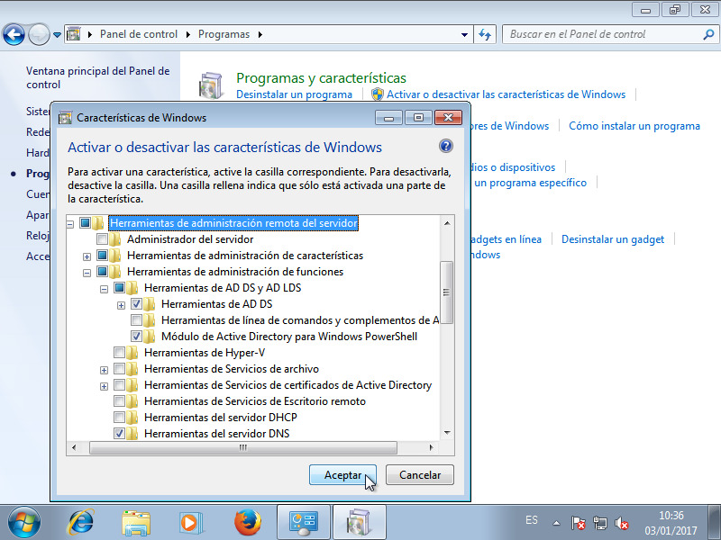Uno de los ítem es Herramientas de administración remota del servidor y es dentro de él donde debemos marcar o desmarcar item según lo que deseemos administrar. Con los ítem que se ven marcados en la captura anterior, basta para poder gestionar usuarios (y curiosear en el DNS), que es nuestro propósito.
Para acceder a la administración de usuarios, puede optarse por dos vías: una consiste en ejecutar el programa dsa.msc y la otra en hacer aparecer el ítem Herramientas administrativas en el menú de inicio. Lo segundo es más cómodo, pero si se usó otro usuario para instalarlas, no aparecerá. Para remediarlo, se puede pulsar con el botón derecho sobre el Botón de Inicio y escoger Propiedades en el menú contextual. En la ventana emergente, confirmando que estamos en la pestaña Menú de inicio, damos a Personalizar y escogemos que aparezcan las Herramientas administrativas:
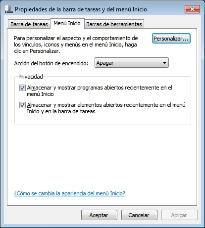 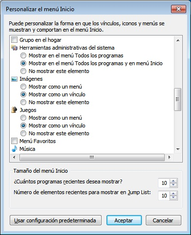Aceptados los cambios, en el menú principal puede verse una entrada Herramientas administrativas entre las cuales está Usuarios y equipos de Active Directory:
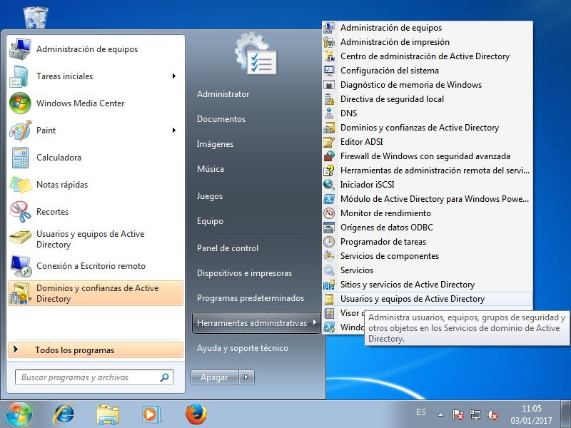Se abrirá la aplicación que de modo bastante sencillo nos permite añadir, eliminar o modificar usuarios y grupos:
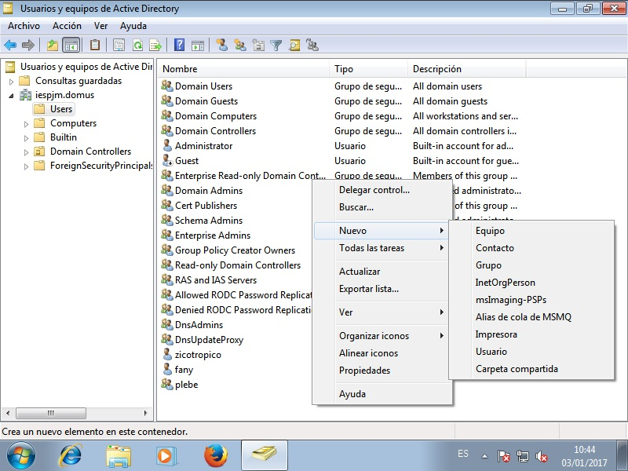Dado que la aplicación es bastante intuitiva, no requiere demasiadas explicaciones. Tan sólo indicaremos cómo crear un usuario con las caracterísicas del ya creado a través de las herramientas nativas de samba.
La creación del usuario pita sería esta:
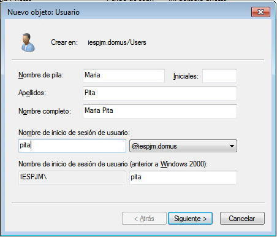 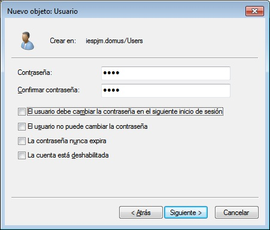Por último, es necesario definir dónde se encuentran sus perfiles, para lo cual puede pulsarse dos veces sobre el nombre del usuario, que ya deberá aparecer en la lista de objetos, o pinchar sobre él con el botón izquierdo y escoger en el menú contextual el ítem Propiedades.
Dentro de la ventana emergente, debe escogerse la pestaña Perfiles y definirlos:
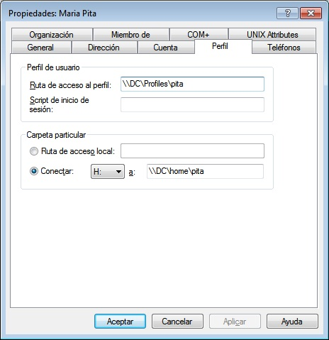Al aceptar los cambios se creará automáticamente en el servidor el directorio
personal de iinux (no el de perfiles de windows, porque este se crea al
ingresar por primera vez). Sin embargo, estará vacío a diferencia del que
creamos a mano que contenía las plantillas de /etc/skel.
6.4.2.5.3. Perfiles móviles¶
La configuración anterior permite tener pérfiles móviles para los clientes windows, pero no para los linux, ya que en estos el directorio personal no estará disponible. La estrategia, en este caso, consistirá en montar el directorio remoto durante el proceso de autenticación8. Para ello debe usarse en los clientes el módulo pam_mount, que se encuentra en paquete aparte:
# apt-get install libpam-mount cifs-utils
Además se ha instalado cifs-utils, porque se montarán volúmenes compartidos con el protocolo cifs (el que usa samba).
El proceso de postinstalación dejará configurado pam para usar el módulo, con
lo que sólo se necesita configurarlo. La idea es que \DC\home\<usuario>
se monte sobre /home/samba/<usuario> cuando el usuario se
autentique con lo que basta con añadir a /etc/security/pam_mount.conf.xml
debajo de la línea que invita a incluir volúmenes lo siguiente:
<volume pgrp="domain_users" fstype="cifs" server="dc" path="home\%(USER)" mountpoint="/home/samba/%(USER)" />
<volume pgrp="domain_users" fstype="cifs" server="dc" path="Profiles\%(USER).V2" mountpoint="/home/samba/%(USER)/WinProfile" />
La segunda línea monta el perfil de windows dentro del subdirectorio WinProfile.
Enlaces de interés
Notas al pie
- 1
En la versión inglesa es Authenticated Users.
- 2
RSAT no está incluida en los sistemas windows para clientes y hay que descargarla, instalarla y configurarla. Lo último lo trataremos en el epígrafe dedicado a la gestión de usuarios bajo windows. Para su descarga, basta utilizar el buscador de internet y escribir el nombre y el sistema para el que se quiere (windows7, windows10); éste facilitará el enlace a la pagina donde la proprio Microsoft lo ofrece.
- 3
samba-tool sirve para otras muchas tareas. De hecho, se usó en la instalación del controlador para algunas labores de comprobación y manipulación del DNS.
- 4
Tanto esta directiva fallback_homedir como la que se citará a continuación, default_shell, respetan los valores que se hayan fijado en el directorio activo, no los sobrescriben. Por tanto, en casos puntuales, se pueden establecer al crear (o editar) el usuario
- 5
A menos que haya una solución con pam_mkhomedir, que yo no he encontrado.
- 6
Téngase en cuenta que un:
$ getent passwdno devolverá la información de los usuarios definidos en el controlador puesto que se dejó comentada la línea:
enumerate = Trueen el fichero
sssd.conf.- 7
Pero, hay que deshabilitar la resolución inversa añadiendo a
/etc/ldap/ldap.confla directiva:SASL_NOCANON yes- 8
Windows sincroniza el directorio remoto con el directorio local del cliente al iniciar la sesión y al cerrarla, lo cual es bastante más eficiente. En linux no hay ninguna alternativa prefabricada.